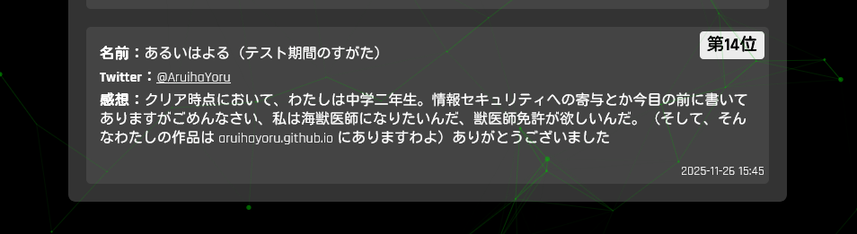

Projects
...の中でも、特に自身のあるもの。
全てのプロジェクトはこちらから
My Lab
27 minitue
プレイヤーは27分間ごとにリセットされる。コンソールを打ち続け、エンディングを探す。たぶん。きっと。
Emoji Factory
Emojiを使役し、稼ぎを生み出させ続ける。Emojiに人権はない。
０F:Limbo
Emojiを仲間にし、最上階若しくは最下層を目指せ。
About Me
Aruiha Yoru (或いは 夜)
ゼンレスゾーンゼロの星見雅が大好きな未成年です。html/
JavaScript/cssについてしかあんま知りません。
コメントの際しかクリニカルな表現が使えません。なんならコメントも気分次第です。文書フェ
チ。デベロッパーを名乗って良いのだろうか？
授業中にPowershellのコード書くと怒られることを最近学びました。学校の備品というか市の所有物に
pythonをダウンロードさしてください先生
接続詞が好きです。それと海洋生物。海獣医になりたいな？
ちなみに...時によって或葉ちゃんかもね。
それと、Hackall V3の最終問題正解者ですわよ
Welcome! Aruiha.
管理者としてログインInspirations
ゼンレスゾーンゼロ
他の追随を許さない特有の世界観、色彩感覚、アーバンな雰囲気の表現。
Cyberpunk 2077
（未プレイながら）圧倒的な世界観構築力と、そこに息づくビジュアルデザインに強く惹かれる。
カタストロフィレストラン
ユーザーに快楽を感じさせる方法。世界観。
デス・ストランディング
唯一無二の世界観構築と、創作物における「テーマ」という概念を深く追求する姿勢。
Minecraft
コマンドによる論理的思考の構築。「プログラミング」という概念に触れるきっかけを与えてくれた。
Roblox
おそらく最初で最後の3Dエンジン。自分にはアセット無でNotepad++に向き合うほうが合っている。
チェンソーマン / GHOST Fixers / 亜人
物語にリアリティと深みを与える「公的機関」という枠組み、その概念の巧みな使い方。
トゥルーマン・ショー
当たり前の日常や世界を「疑う」ことの重要性、そして世界の真実を探求する姿勢。
人間の恐怖の根源
『ゼロ・グラビティ』の孤独、『チェンソーマン』の未知、『近畿地方のある場所について』の不気味さ。人間が根源的に何を怖がるかという探求。
Warframe
多種多様なキャラクターデザインと、それぞれの背景にある奥深いストーリーテリング。
SCP財団
どうすればより良い文章を書けるのか。読者の想像力を刺激しつつ、クールで客観的な「クリニカルさ」を保つ文章術。
GHOST IN THE SHELL / 攻殻機動隊
サイバーパンクの世界観、UIデザイン、そして「自我」を問う哲学的なテーマが全ての創作の根源にある。